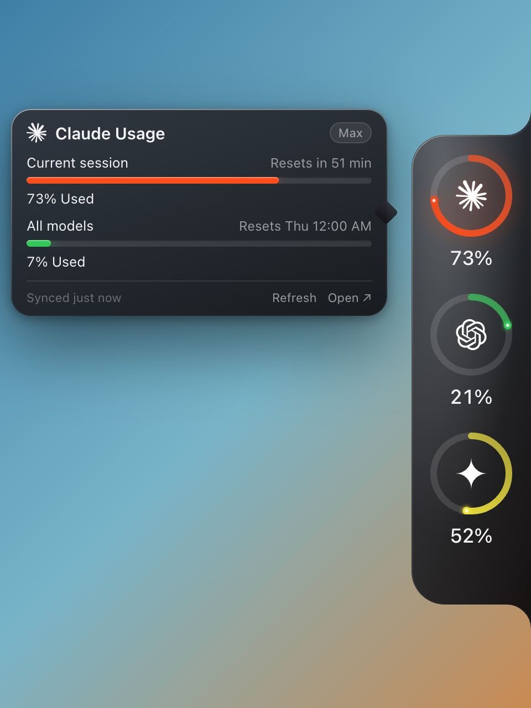
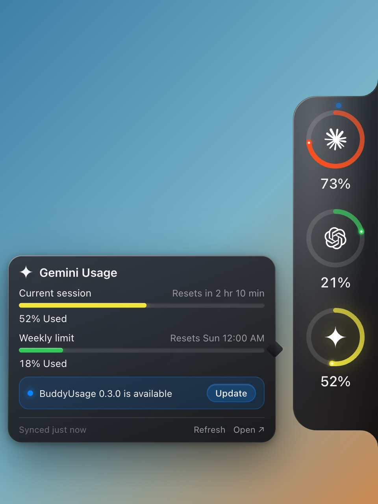
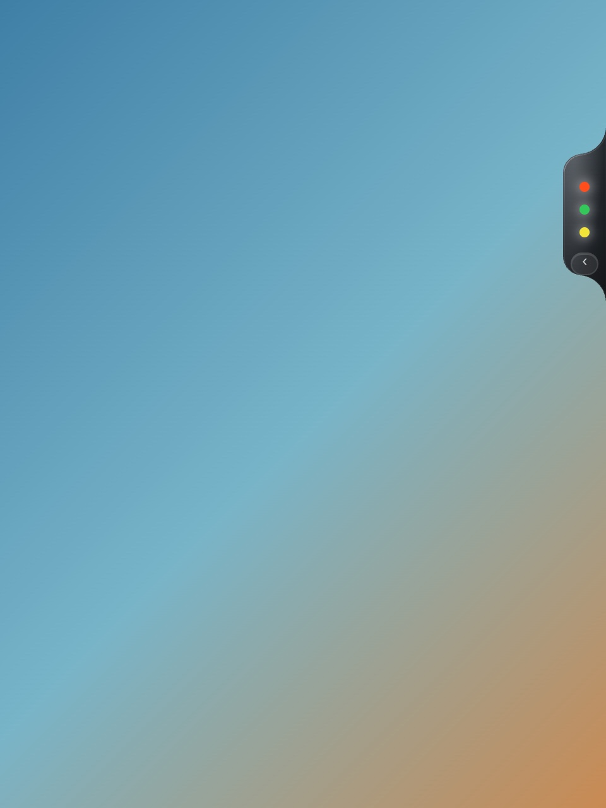
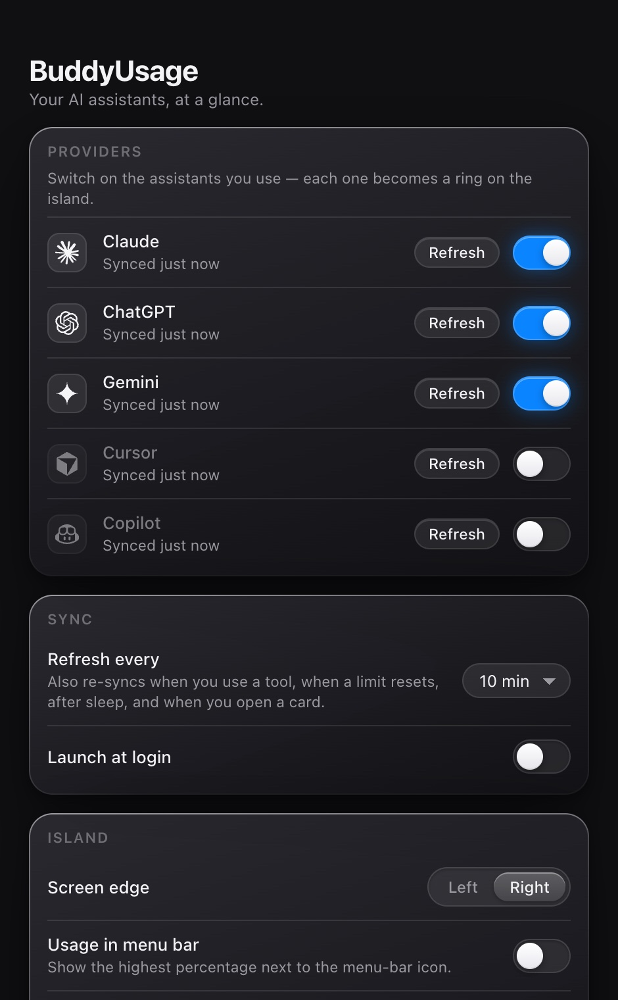

BuddyUsage is a small island on the edge of your screen. It shows how much of your Claude, ChatGPT, Gemini, Cursor and Copilot plan you have used, and when each limit resets, so a limit is never a surprise.
Latest release · all downloads




Docked to the edge of your screen, coloured by how close you are to the limit. You know where you stand without opening anything.
It re-syncs when you use a tool, when a limit resets, after sleep, and whenever you open a card. Countdowns tick live. There is no refresh button to babysit.
Session and weekly limits on paid plans. Free plans get a clear "no meter" state rather than an error. Nothing leaves your machine.
Pick your computer. Every download is the latest release, straight from GitHub. BuddyUsage updates itself afterwards with one click inside the app.
Not sure? Apple menu, then About This Mac. "Apple M" means Apple Silicon.
.dmg and drag BuddyUsage onto Applications.Paste into Terminal (Applications → Utilities). Downloads without a browser, so there's no security prompt.
curl -fsSL https://raw.githubusercontent.com/SmtTheSE/BuddyUsage/main/install.sh | bash
Homebrew:
brew tap SmtTheSE/buddyusage https://github.com/SmtTheSE/BuddyUsage brew trust SmtTheSE/buddyusage brew install --cask buddyusage
irm https://raw.githubusercontent.com/SmtTheSE/BuddyUsage/main/install.ps1 | iex
chmod +x).curl -fsSL https://raw.githubusercontent.com/SmtTheSE/BuddyUsage/main/install.sh | bash
It reads the same Settings → Usage page you'd open in a browser, in a hidden window that's signed in to your account. Nothing leaves your machine; there's no BuddyUsage server and no analytics.
Yes. Gemini publishes usage limits on every plan, so free users get real gauges. Claude and ChatGPT don't show percentages on free plans, so the ring says "Free" and the card explains instead of showing an error.
The app isn't notarized with a paid Apple Developer ID, so Gatekeeper asks once. It's a standard step for open-source Mac apps: System Settings → Privacy & Security → Open Anyway. The Terminal installer avoids the prompt entirely.
It polls every few minutes and otherwise reacts to real events: you using a tool, a limit resetting, waking from sleep. Every trigger funnels into one fetch per provider, so nothing is requested twice.
Drag it anywhere and it snaps to the nearest edge of any display. The ‹ handle collapses it to a slim tab. Settings lets you pick providers, refresh rate, edge, appearance, and an optional menu-bar readout.
BuddyUsage checks GitHub Releases in the background. When there's a new version you'll see a dot on the island and an Update button. One click installs it and restarts. A download link is always there too.